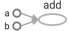
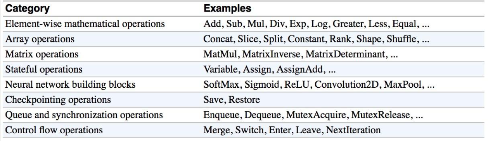
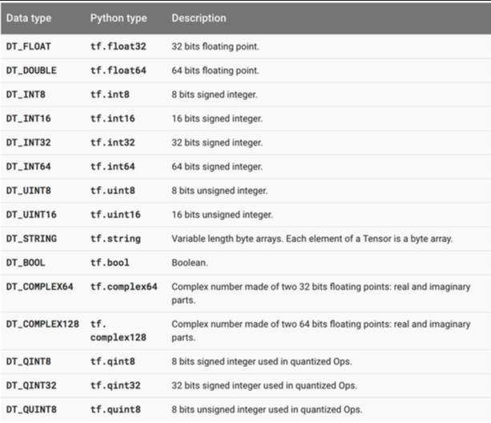

TensorFlow(5): Vector and Matrix Product in Numpy and TensorFlow
Numpy
Following are common vector and matrix product operations in Numpy, they are quite simple and straightforward:
Inner Product \(\quad a^Tb\quad \):
np.inner(a,b)Outer Product \(\quad ab^T\quad \):
np.outer(a,b)Dot Product \(\quad a \cdot b = \sum a_ib_i\quad \):
np.dot(a,b)Elementwise Product \(\quad c_i = a_ib_i\quad \):
np.multiply()orc=a*b
Note: inner product is defined on vector spaces over a field 𝕂 (finite or infinite dimensional). Dot product refers specifically to the product of vectors in \(ℝ^n\)
The difference between the following implementations of the dot/inner/outer/elementwise product are demonstrated as follows:
import numpy as np
W = np.ones((2, 7), dtype='float32')
x1 = np.array([9, 2, 5, 0, 0, 7, 5])
x2 = np.array([9, 2, 2, 9, 0, 9, 2])
print('vector dot product', np.dot(x1,x2)) # dot product
print('inner', np.inner(x1,x2)) # inner product
print('outter', np.outer(x1,x2)) # outter product
print('element-wsie', np.multiply(x1,x2)) # Element-wise product
print('element-wsie', x1*x2) # Element-wise product
print('matrix dot product', np.dot(W, x1)) # dot product
vector dot product 168
inner 168
outter [[81 18 18 81 0 81 18]
[18 4 4 18 0 18 4]
[45 10 10 45 0 45 10]
[ 0 0 0 0 0 0 0]
[ 0 0 0 0 0 0 0]
[63 14 14 63 0 63 14]
[45 10 10 45 0 45 10]]
element-wsie [81 4 10 0 0 63 10]
element-wsie [81 4 10 0 0 63 10]
matrix dot product [ 28. 28.]
For detailed explanation, see here;
TensorFlow
Vector inner/outer Product are a bit complex in TensorFlow.
import tensorflow as tf
import numpy as np
x = tf.Variable([[1, -2, 3]], tf.float32, name='x')
y = tf.Variable([[-1, 2, -3]], tf.float32, name='y')
## inner product
inner_product1 = tf.reduce_sum(tf.multiply(x, y))
inner_product2 = tf.matmul(x, y, transpose_a=False, transpose_b= True) # different from inner_product1
## outer product
outer_product2 = tf.matmul(x, y, transpose_a= True)
## matrix dot product
X = tf.constant(np.random.randn(3,3), name='X')
W = tf.constant(np.random.randn(3,3), name='W')
matrix_product = tf.matmul(W, X)
sess = tf.InteractiveSession()
init_op = tf.global_variables_initializer()
# run
sess.run(init_op)
print(sess.run(inner_product1))
print(sess.run(inner_product2))
print(sess.run(outer_product2))
print(sess.run(matrix_product))
-14
[[-14]]
[[-1 2 -3]
[ 2 -4 6]
[-3 6 -9]]
[[-0.88722509 -0.94128018 -2.1999658 ]
[-0.67967623 1.33193446 -0.75612585]
[ 0.31741623 1.3271727 -0.04311113]]
TensorFlow(4):TensorFlow Operation
1 Visualize with TensorBoard
import tensorflow as tf
a = tf.constant(2, name='a')
b = tf.constant(3, name='b')
x = tf.add(a, b, name='add')
with tf.Session() as sess:
writer = tf.summary.FileWriter('./graphs', sess.graph)
print(sess.run(x))media/15033836099887
writer.close() # close the writer when you're done using it.
5
Bash command (to view TensorBoard):
tensorboard --logdir='./graphs' --port 6006
# open http://localhost:6006/#graphs in your browser
Explicitly name operation, variable
a = tf.constant(2, name='a')
b = tf.constant(3, name='b')
x = tf.add(a,b,name='add')
with tf.Session() as sess:
writer = tf.summary.FileWriter('./graphs', sess.graph)
print(sess.run(x))
writer.close() # close the writer when you're done using it.
5
The figure produced by TensorBoard is as follows:

Note: Learn to use TensorBoard well and often. It will help a lot when you build complicated models.
2 Constant types
Tensors filled with a specific value
Using tensorflow.zeros to fill tensor with zeros, which is similar to Numpy:
tf.zeros(shape, dtype=tf.float32, name=None)
For example,
x = tf.zeros([2,3], tf.int32)
with tf.Session() as sess:
print(sess.run(x))
[[0 0 0]
[0 0 0]]
tensorflow.zeros_like return an tensor of zeros with the same shape and type as a given tensor. For example, we may want to have a tensor filled with zeros, with the same shape as x:
y = tf.zeros_like(x)
with tf.Session() as sess:
print(sess.run(y))
[[0 0 0]
[0 0 0]]
There are other command to fill tensor with a specific value, such as tensorflow.ones, tensorflow.ones_like, which of usage is similar to tensorflow.zeros, tensorflow.zeros_like.
tensorflow.fill creates a tensor filled with a scalar value:
tf.fill(dims, value, name=None)
z = tf.fill([3,4],3)
with tf.Session() as sess:
print(sess.run(z))
[[3 3 3 3]
[3 3 3 3]
[3 3 3 3]]
Constants as sequences
You can create constants that are sequences, using tf.linspace, tf.range:
tf.linspace(start, stop, num, name=None)
# create a sequence of num evenly-spaced values are generated beginning at start. If num > 1, the values in the sequence increase by stop - start / num - 1, so that the last one is exactly stop.
# start, stop, num must be scalars
# comparable to but slightly different from numpy.linspace
# numpy.linspace(start, stop, num=50, endpoint=True, retstep=False, dtype=None)
tf.range(start, limit=None, delta=1, dtype=None, name='range')
# create a sequence of numbers that begins at start and extends by increments of delta up to but not including limit
# slight different from range in Python
x = tf.linspace(10.0, 13.0, 4, name='linspace')
y = tf.range(3, 18)
z= tf.range(3, 18, 3)
with tf.Session() as sess:
print(sess.run(x))
print(sess.run(y))
print(sess.run(z))
[ 10. 11. 12. 13.]
[ 3 4 5 6 7 8 9 10 11 12 13 14 15 16 17]
[ 3 6 9 12 15]
3 Math Operations

a = tf.constant([[3,6],[0,0]])
b = tf.constant([[0,0],[2,2]])
x1 = tf.add(a, b)
x2 = tf.add_n([a,b,b]) # >> [7 10]. Equivalent to a + b + b
x3 = tf.multiply(a, b) # >> [6 12] because mul is element wise
x4 = tf.matmul(a, b) # >> ValueError
x5 = tf.matmul(tf.reshape(a, [4, 1]), tf.reshape(b, [1, 4])) # >> [[18]]
with tf.Session() as sess:
sess.run(a)
sess.run(b)
print('x1:\n', sess.run(x1))
print('x2:\n', sess.run(x2))
print('x3:\n', sess.run(x3))
print('x4:\n', sess.run(x4))
print('x5:\n', sess.run(x5))
x1:
[[3 6]
[2 2]]
x2:
[[3 6]
[4 4]]
x3:
[[0 0]
[0 0]]
x4:
[[12 12]
[ 0 0]]
x5:
[[ 0 0 6 6]
[ 0 0 12 12]
[ 0 0 0 0]
[ 0 0 0 0]]
4 TensorFlow data types:
Python Native Types
TensorFlow takes Python natives types: boolean, numeric (int, float), strings
TensorFlow takes in Python native types such as Python boolean values, numeric values (integers, floats), and strings. Single values will be converted to 0-d tensors (or scalars), lists of values will be converted to 1-d tensors (vectors), lists of lists of values will be converted to 2-d tensors (matrices), and so on.
tf.InteractiveSession() # open tensorflow interactivesession
t_0 = 19 # Treated as a 0-d tensor, or "scalar"
print('t_0:',t_0)
print(tf.zeros_like(t_0)) # ==> 0
print(tf.ones_like(t_0)) # ==> 1
t_1 = [b"apple" , b"peach" , b"grape"] # treated as a 1-d tensor, or "vector"
print('t_1:',t_1)
print(tf.zeros_like(t_1)) # ==> ['' '' '']
t_2= [[ True, False, False], [False, False, True], [False, True , False ]] # treated as a 2-d tensor, or "matrix"
print('t_2:',t_2)
print(tf.zeros_like(t_2)) # ==> 2x2 tensor, all elements are False
print(tf.ones_like(t_2)) # ==> 2x2 tensor, all elements are True
t_0: 19
Tensor("zeros_like_32:0", shape=(), dtype=int32)
Tensor("ones_like_20:0", shape=(), dtype=int32)
t_1: [b'apple', b'peach', b'grape']
Tensor("zeros_like_33:0", shape=(3,), dtype=string)
t_2: [[True, False, False], [False, False, True], [False, True, False]]
Tensor("zeros_like_34:0", shape=(3, 3), dtype=bool)
Tensor("ones_like_21:0", shape=(3, 3), dtype=bool)
Note: Do not use Python native types for tensors because TensorFlow has to infer Python type.
TensorFlow Native Types
Like NumPy, TensorFlow also its own data types such as tf.int32, tf.float32. Below is a list of current TensorFlow data types.

Numpy Data Types
By now, you’ve probably noticed the similarity between NumPy and TensorFlow. TensorFlow was designed to integrate seamlessly with Numpy, the package that has become the lingua franca of data science.
TensorFlow’s data types are based on those of NumPy; in fact, np.int32 == tf.int32 returns True. You can pass NumPy types to TensorFlow ops.
Example:
import numpy as np
tf.ones([2, 2], np.float32)
<tf.Tensor 'ones:0' shape=(2, 2) dtype=float32>
x = np.zeros((2,2))
tf.ones_like(x)
<tf.Tensor 'ones_like_22:0' shape=(2, 2) dtype=float64>
Constant
Constants are stored in the graph definition. This makes loading graphs expensive when constants are big. Only use constants for primitive types, use variables or readers for more data that requires more memory.
g = tf.Graph() # to add operators to a graph, set it as default:
with g.as_default():
my_const = tf.constant([1.0, 2.0], name="my_const")
with tf.Session() as sess:
print(sess.graph.as_graph_def())
node {
name: "my_const"
op: "Const"
attr {
key: "dtype"
value {
type: DT_FLOAT
}
}
attr {
key: "value"
value {
tensor {
dtype: DT_FLOAT
tensor_shape {
dim {
size: 2
}
}
tensor_content: "\000\000\200?\000\000\000@"
}
}
}
}
versions {
producer: 24
}
Variables
tf.constant is an operation, but tf.Variable is a class. tf.Variables holds several operations:
tf.InteractiveSession()
xx = tf.Variable(23, name='scalar')
xx.initializer # init op
xx.value() # read op
assign_op = xx.assign(5)
You have to initialize variables, The easiest way is initializing all variables at once:
init = tf.global_variables_initializer()
with tf.Session() as sess:
sess.run(init)
print(xx.eval())
sess.run(assign_op)
print(xx.eval())
23
5
Each session maintains its own copy of variable
W = tf.Variable(10, name='W')
sess1 = tf.Session()
sess2 = tf.Session()
sess1.run(W.initializer)
sess2.run(W.initializer)
print(sess1.run(W.assign_add(10)))
print(sess2.run(W.assign_sub(2))) # not 18!
sess1.close()
sess2.close()
20
8
Use a variable to initialize another variables
# want to declare U = 2*W
# W is random tensor
W = tf.Variable(tf.truncated_normal([4, 2]))
U = tf.Variable(2*W.initialized_value())
with tf.Session() as sess:
sess.run(U.initializer)
print(U.eval())
[[ 1.11442947 -3.1675539 ]
[ 3.02267933 -0.81786388]
[ 2.57613969 -0.98440802]
[ 0.6298722 -0.38194153]]
Session vs InteractiveSession,
You sometimes see InteractiveSession instead of Session. The only difference is an InteractiveSession makes itself the default.
sess = tf.InteractiveSession()
a = tf.constant(5.0)
b = tf.constant(6.0)
c = a*b
# We can just use `c.eval()` with out specifying the context `sess`
print(c.eval())
sess.close()
30.0
Placeholder
A TensorFlow program often has 2 phases:
- Assemble a graph
- Use a session to execute operations in the graph
\(\rightarrow\) can assemble the graph without knowing the values needed for computation
Analogy: Can define the function \(f(x,y) = x*2+y\) without knowing value of \(x\) or \(y\).
So using placeholders, we can later supply their data when they needed to execute the computation.
tf.placeholder(dtype, shape=None, name=None)
shape=None means that tensor of nay shape will be accepted as value for placeholder. Note: shape=None is easy to construct graphs, but nightmarish for debugging.
To make shape flexible, None can be used in the shape argument:
X = tf.placeholder(dtype=tf.float32, shape=[n_x, None], name='X')
Lazy loading
Lazy loading means defer creating/initializing an object until it is needed. In the context of TensorFlow, it means you defer creating an op until you need to compute it.
Normal loading:
g = tf.Graph()
with g.as_default():
x = tf.Variable(10, name='x')
y = tf.Variable(20, name='y')
z = tf.add(x,y) # you create the node for add node before executing the graph
with tf.Session() as sess:
sess.run(tf.global_variables_initializer())
for _ in range(10):
sess.run(z)
Lazy loading:
g = tf.Graph()
with g.as_default():
x = tf.Variable(10, name='x')
y = tf.Variable(20, name='y')
with tf.Session() as sess:
sess.run(tf.global_variables_initializer())
writer = tf.summary.FileWriter('./my_graph/12', sess.graph)
for _ in range(10):
sess.run(tf.add(x,y)) # someone decides to be clever to save one line of code
writer.close()
Note: In Lazy loading, Node ADD added 10 times to the graph definition. Image you want to compute an operations thousands of times, you graph gets bloated slow to load, and expensive to pass around.
Solution:
- Separate definition of ops from computing/running ops
- Use Python property to ensure function is also loaded once the first time it is called.
TensorFlow(3):What is a tensorflow session?
by Danijar Hafner, modified by larry
I’ve seen a lot of confusion over the rules of tf.Graph and tf.Session in TensorFlow. It’s simple:
- A
graphdefines the computation. It doesn’t compute anything, it doesn’t hold any values, it just defines the operations that you specified in your code. - A
sessionallows you to execute graphs or part of graphs. It allocates resources (on one or more machines) for that and holds the actual values of intermediate results and variables.
Let’s look at an example.
Defining the Graph
We define a graph with a variable and three operations: x returns the current value of our variable. init assigns the initial value of 42 to that variable. x_assign assigns the new value of 13 to that variable.
import tensorflow as tf
graph = tf.Graph()
with graph.as_default():
x = tf.Variable(42, name='foo')
init = tf.global_variables_initializer()
x_assign = x.assign(13)
On a side note: TensorFlow creates a default graph for you, so we don’t need the first two lines of the code above. The default graph is also what the sessions in the next section use when not manually specifying a graph.
Running Computations in a Session
To run any of the three defined operations, we need to create a session for that graph. The session will also allocate memory to store the current value of the variable.
with tf.Session(graph=graph) as sess:
sess.run(init)
sess.run(x_assign)
print(sess.run(x))
13
As you can see, the value of our variable is only valid within one session. If we try to query the value afterwards in a second session, TensorFlow will raise an error because the variable is not initialized there.
with tf.Session(graph=graph) as sess:
print(sess.run(x))
# Error: Attempting to use uninitialized value foo
Of course, we can use the graph in more than one session, we just have to initialize the variables again. The values in the new session will be completely independent from the first one:
with tf.Session(graph=graph) as sess:
sess.run(init)
print(sess.run(x))
42
Hopefully this short workthrough helped you to better understand tf.Session.
TensorFlow(1): Tensorflow Introduction
Tensorflow is an open-source software library for Machine Intelligence.
Install
Using conda tool under Anaconda to install tensorflow is a very convenient and direct way.
TensorFlow Python docset
Build TensorFlow Python docset is complex, many dependent utilities and procedures are needed. Fortunately, a feed for TensorFlow Python docset has been built for us.
Add feed below to Dash/Zeal, and install docset. (Project site)
https://raw.githubusercontent.com/ppwwyyxx/dash-docset-tensorflow/master/TensorFlow.xml
Basics
Graph and Operation
A data flow graph representing a TensorFlow computation. It can be viewed via TensorBoard.
An Operation is a node in a TensorFlow Graph that takes zero or more Tensor object as input, and produces zero or more Tensor objects as output.
For example c = tf.matmul(a, b) creates an Operation of type MatMul that takes tensors \(a\) and \(b\) as input, and produces \(c\) as output.
Session
If you are not using an InteractiveSession, then you should build the entire computation graph before starting a session and launching the graph.
Note that there are two typical ways to create and use sessions in tensorflow:
Method 1:
sess = tf.Session()
# Run the variables initialization (if needed), run the operations
result = sess.run(..., feed_dict = {...})
sess.close() # Close the session
Method 2:
with tf.Session() as sess:
# run the variables initialization (if needed), run the operations
result = sess.run(..., feed_dict = {...})
# This takes care of closing the session for you :)
Steps
Writing and running programs in TensorFlow has the following steps:
- Create Tensors (variables) that are not yet executed/evaluated.
- Write operations between those Tensors.
- Initialize your Tensors.
- Create a Session.
- Run the Session. This will run the operations you'd written above.
Learning Resources

Copyright © 2015 Powered by MWeb, Theme used GitHub CSS.